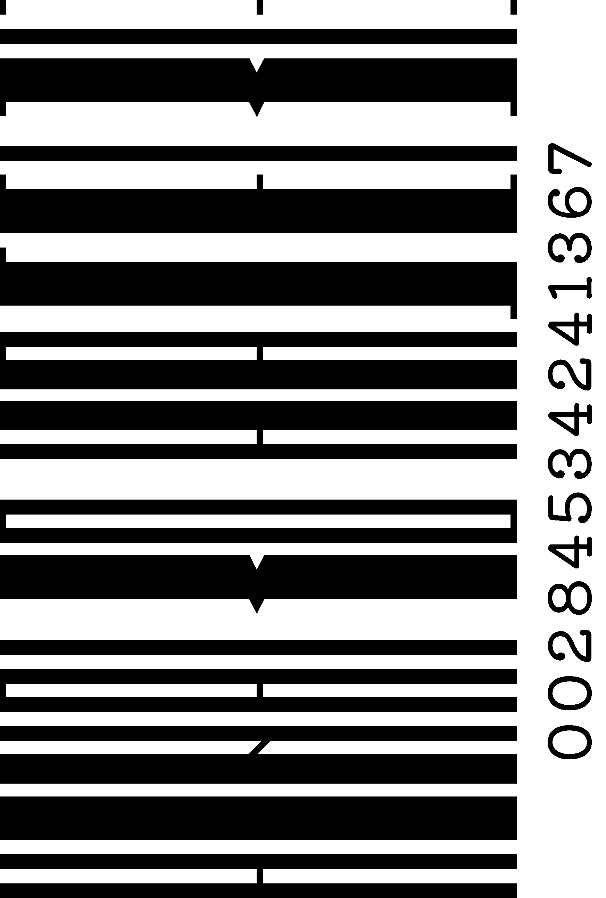

05.
少年発電
ホールディングス
バンドロゴ
2021.05-2021.08
-
SKILLS
Illustrator / Photoshop
-
SCOPE
ALL
-
CONTENTS
Japanese logo, English logo
HINAKO HASEBE - WORKS
05.
2021.05-2021.08
Illustrator / Photoshop
ALL
Japanese logo, English logo
バンド活動をしていた頃のご縁で、ご依頼をいただきました。大変ありがたいことに好評をいただき、ロゴシールのグッズ化を実現していただきました。

日本語ver.は昭和時代のレコードや映画、英語ver.は洋楽レコードのイメージを表現して欲しい、とのことでした。
また、彼らの尊敬するバンドを調査したり、彼らの曲、ライブを聴き、その”らしさ”を明確にしました。
昭和らしい印象のタイポグラフィや、60〜70年代の邦楽、洋楽のバンドのロゴの特徴を調査しました。

曲のイメージとバンド名から、稲妻とコンセントのモチーフを文字に入れました。


回り続けるレコードから着想し、回転している様な効果線のあしらいを加えました。